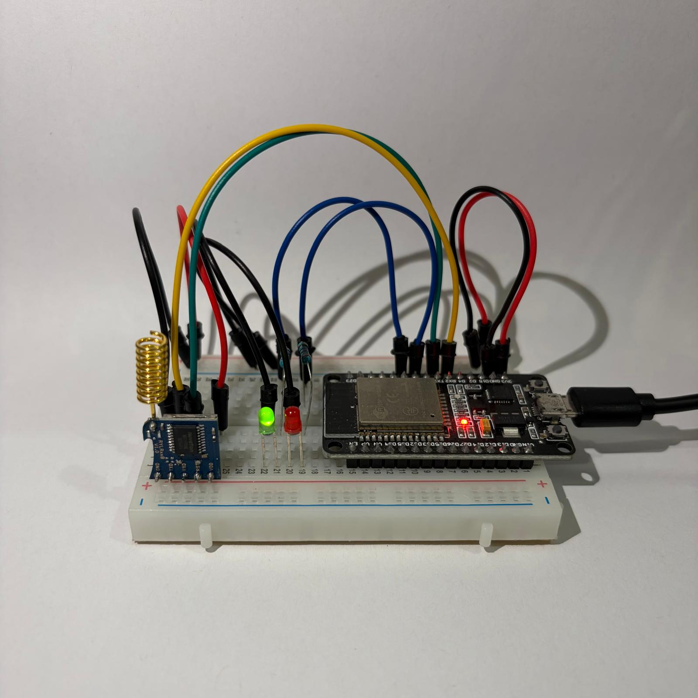
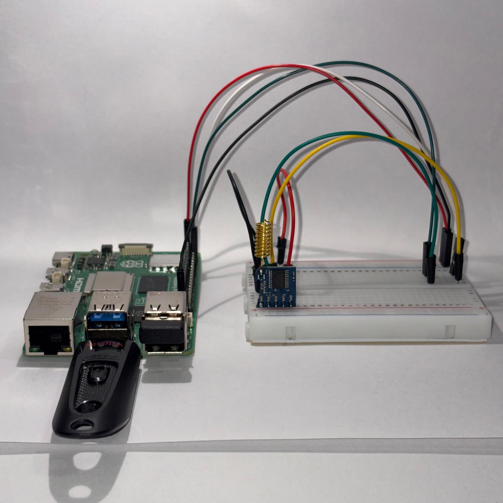
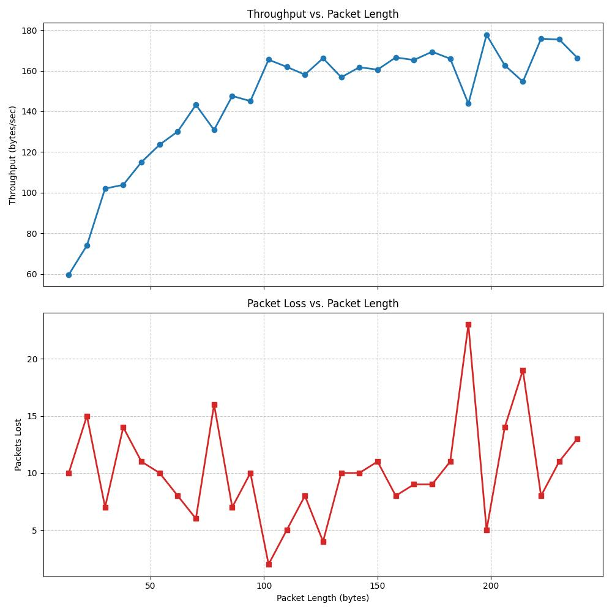
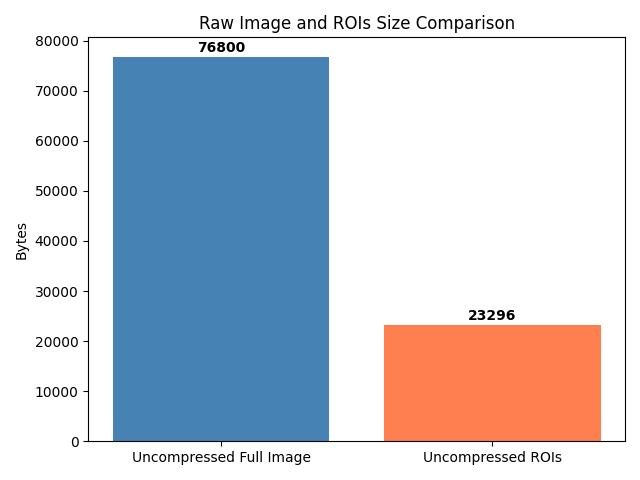

About the Framework
LoRaVSN is a modular, ML-assisted image transmission framework designed to bridge the "Connectivity Gap" in remote monitoring. While traditional computer vision relies on high-bandwidth Wi-Fi, LoRaVSN enables transmission over the long-range, low-power LoRaWAN protocol. This framework serves as the critical communication link for Project PARKS, moving visual data from remote sensing points to inference gateways.
Engineering Constraints & Standards
Memory Management
The ESP32 provides 320 KB of internal SRAM. We utilize dynamic heap allocation (malloc) to manage 76,800-byte grayscale buffers safely.
Bandwidth Bottleneck
The REYAX RYLR998 limits payloads to 240 bytes. Our protocol uses chunking and sequencing to rebuild full frames at the gateway.
LoRaWAN Standard
Operates on the 915 MHz band following the LoRaWAN specification for long-range, low-power bi-directional communication.
System Architecture
The framework follows a specialized layered design to handle the 240-byte payload limit of the REYAX RYLR998 module while maintaining modularity and scalability.
ESP32 nodes with OV2640 cameras capturing 320x240 grayscale imagery.
ROI extraction via COCO bounding boxes, K-Clusters dimensionality reduction, and C++ optimized compression.
Custom UART-based messaging protocol with typed headers (DAT, ACK, ERR) for reliable multi-packet transmission.
Raspberry Pi 5 gateway performing ML-assisted reconstruction to restore image quality.
Logical Data Flow
Capture → Segment → Compress → Packetize → LoRaWAN → Reassemble → Reconstruct
System Hardware Setup
Physical implementation of the LoRaVSN framework using low-power embedded components and high-performance edge gateways.

Remote Node: ESP32-WROOM-32 integrated with the REYAX RYLR998 LoRa module.

Gateway: Raspberry Pi 5 acting as the central receiver and ML-reconstruction engine.
Performance Verification
The framework is validated through hardware-in-the-loop testing. We benchmarked transmission timing, packet loss, and reconstruction quality using the PKLot dataset.

TX/RX Analysis: Real-time benchmarking of data throughput and latency across the LoRaWAN link.

Reliability: Packet delivery rate and loss analysis under variable payload sizes.
Our Team
Alexander A. Angueira Bretón
Embedded Systems & Hardware Integration
Lead for ESP32 firmware development and protocol design.
Pedro J. Gracia Ramos
Data Compression & CLI Development
Lead of LoRa system and ML workflows.
Alexa M. Zaragoza Torres
Frontend Delivery & System Validation
Lead of compression systems, system validation, and technical documentation management.